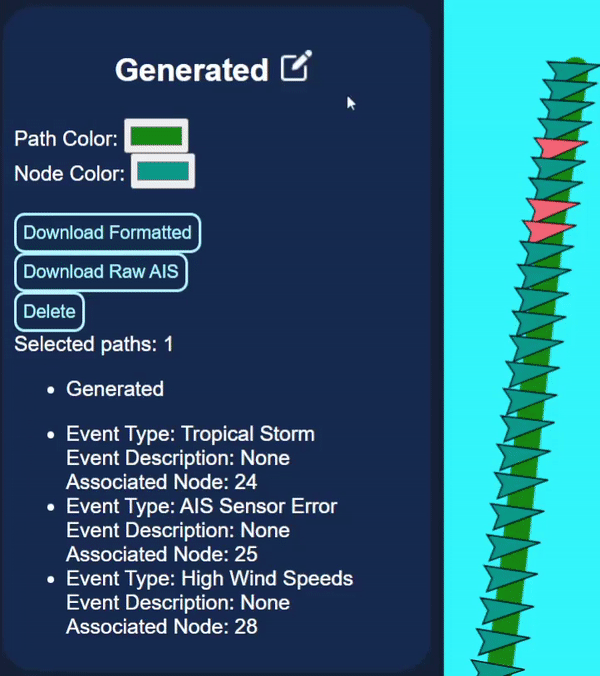
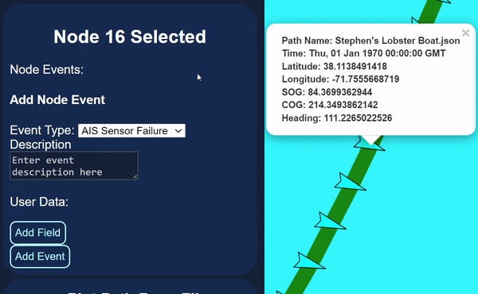

About |
The Vessel Path Generation Tool is a software system that utilizes machine learning technology to generate artificial AIS pathing data that is plausibly realistic. The primary benefit is to enable -redacted- to test and demo their software systems without resorting to confidential data. In totality, Vessel Path Generation Tool (VPGT) will allow a user to provide path parameters to generate paths with desired features and additionally provide a mechanism to visualize said data. Such a system could save time, money, and potential legal hardships from having to utilize confidential data to test or demo software systems. |
|---|
Startup |
Windows: To start the VPGT on Windows, navigate to the root directory of the project and run the VPGT.bat file Linux: To start the VPGT on Linux, navigate to the root directory of the project and run the VPGT.sh file From the command line, project startup is the same on all platforms. Navigate to the root directory of the project and execute node server/server
From here, the server is now running and you can launch the interface by connecting to localhost on port 80 in your browser, or if you are running it remotely the IP address of the server computer |
|---|
User Interface |
|
|---|---|
Path Generation Menu |
|
| The Latitude and Longitude fields correspond to the first point for a generated path.
Coordinates can be either entered manually or via a map click. |
 |
| Maritime Mobile Service Identity (MMSI) is a unique 9 digit number that is assigned to a vessel. Speed Over Ground (SOG) is calculated from the boat's speed through the water in addition to other factors that may affect its speed such as current and wind. Course Over Ground (COG) indicates the direction of the boat's heading relative to the land. Heading represents the angle of the bow of the boat in degrees. Length represents the number of nodes that VPGT will generate along a path. | |
| The Likelihood field allows for configuration of the percent chance that a vessel will encounter an event (0-100 range). | |
| The Generate button sends the above data to the machine learning model which will return an artificial vessel path. | |
Path Selection Menu |
|
After selecting a singular path, the  buttton allows for renaming of a path. buttton allows for renaming of a path. |
 |
| The Path Color and Node Color settings change the color of the path and path nodes respectivly. | |
|
The Download Formatted button downloads the path with all the metadata attached to the JSON (Name, Length, Average Speed, Path Color, Node Color, Marker Visibility, and Path events). The Download Raw AIS button downloads the path with only select metadata attached to to the JSON (eg. Name and Path Events.) | |
| The Delete button deletes the path from the program. | |
| The esc key can be pressed at any time to quickly swap back to the Path Generation menu. | |
Node Selection Menu |
|
| The event type field allows different event types to be added to the selected node. Custom events can be added through the configuration menu. |  |
| The event description field allows for a description to be added to a new event. | |
| The add field button adds user metadata to events. A key is required for the field to save. | |
| The add event button saves the event and any other metadata attached to it to the selected node. | |
| When a node with an event is clicked on, a button will apear to delete attached event. | |
| The esc key can be pressed at any time to quickly swap back to the Path Selection menu | |
Plot Path From File Menu |
|
| The Choose File button opens the file explorer and allows the upload of a singular JSON file. |  |
| The Load From File button uploads a selected from the local file system onto the map. | |
| Multiple files can be dragged and dropped onto the page to be uploaded and plotted onto the map. | |
Path Manager Menu |
|
| Search enables the finding of phrases quickly in either the Whole Table, the Path Name field, or the MMSI field. |  |
| The Filter Area allows for numerical constraints to be placed on the paths displayed in the table. These filters can be hidden using the Filter - button. | |
| Clicking on any of the headers in the first row of the table can be done to sort the data in either ascending or descending order. Singular paths can be selected through this menu by clicking anywhere on the respective path's row. Shift + Click allows for multiple paths to be selected. | |
| The Delete Selected button deletes all of the selected paths. The Delete All button deletes all the paths loaded onto the tool. | |
API Specification |
The API for the VPGT currently support 2 different POST commands, genPath and genRandom. The API communicates using POST requests with an /genPath
The genPath command takes in several parameters regarding path generation in the request body as JSON members. Upon completion, the path will be returned in our raw AIS format as JSON. /genRandomThe genRandom command requires no request body to be passed, the server will simply respond to this endpoint by generating a path with all the fields set to random values. Upon completion, the path will be returned in our raw AIS format as JSON. |
|---|
Path Types |
There are two types of path JSON files that VPGT can interact with, what we call "raw AIS" paths and "formatted" paths. Our raw paths are objects that contain 2 arrays, an array of AIS tuples called PathData, and the PathEvents array containing event data. This is the format generated by the machine learning backend and is based upon the format of our preprocessor output. This format is lighter weight and contains purely path data. Our formatted paths contain the same two fields as our raw paths but also additional metadata that is used for plotting. These files can also store more than one path within them enabling the user to save the entire state of the tool, capturing all the paths, their events, their color settings, all to a file that can be reloaded later. |
|---|
Preprocessor |
The preprocessor can be launched from the main directory with the command: python ./machinelearning/preprocessorControl.py. This will launch the preprocessor controller which allows editing of settings, and launching of the Preprocessor. The options available in the controller command line are outlined below: Source Path: Path to the data that the preprocessor will process. A folder with CSV files. Destination Path: Path that the preprocessor will save data to after processing. Saved as JSON files. [1]Features to ignore: Features of the CSVs that will be left out of the processed data. [2]Pad data?: If set to true, preprocessor will extend all paths to Max Path Length. [3]Get CSV Stats?: If set to true, the preprocesor will output extra information about the CSVs. [4]Minimum Path Length: The shortest acceptable path length to include in output. [5]Maximum Path Length: The longest acceptable path length to include in output. [6]Output Path Count per CSV: The maximum number of paths to take from each CSV. [r]Run preprocessor with current settings Runs the preprocessor. [h]Help Shows the help information. [x]Exit Exits the program. |
|---|
Attributions |
|---|
|
Several creative commons image assets were utilized from www.flaticon.com and this is a compiled list of all the image attributions. |
|
Edit icons created by Pixel perfect - Flaticon Exit icons created by The Icon Tree - Flaticon Settings icons created by Pixel perfect - Flaticon Info icons created by Freepik - Flaticon Dark icons created by adriansyah - Flaticon Weather icons created by Freepik - Flaticon |